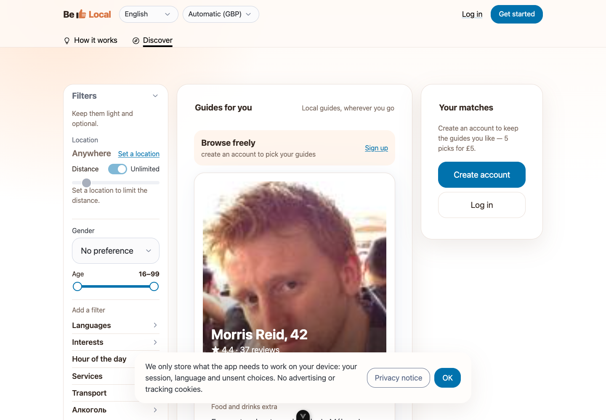

One base size, one control height, one radius family, and one brand colour used everywhere (today Pico’s default blue still runs the buttons).

1 2 3 4 5 628 · Nunito 800Guides for you22 · Nunito 800Ana Ribeiro, 3418 · Nunito 800Your matches16 · Inter 400Body text and card bios14 · Inter 500Labels, buttons, inputs, menu12 · Inter 500Hints, captions, badgesHeadings in the rounded face that matches the wordmark; everything you read or type in Inter. Never above 28 px inside the app (the marketing page may go bigger).
Rules: primary = honey with ink text (contrast 9:1). Max one primary per view. Pills (full round) only for chips; buttons and fields share the 10 px radius; cards 16 px. Small choice sets (gender, role, sort) are segmented controls, not selects. Selects only for long lists (country, language), and those get type-ahead.